Data-Driven Design w/ Google Analytics and Segment.io
A presentation by
Dan Bergren
First, what does it mean to be data-driven?
To be
data-driven you must:
- 1. Record data
-
-
To be
data-driven you must:
- 1. Record data
- 2. Interpret data
-
To be
data-driven you must:
- 1. Record data
- 2. Interpret data
- 3. Rinse & repeat!
This makes sense...
but many people only do Step 1: record data.
This is because...
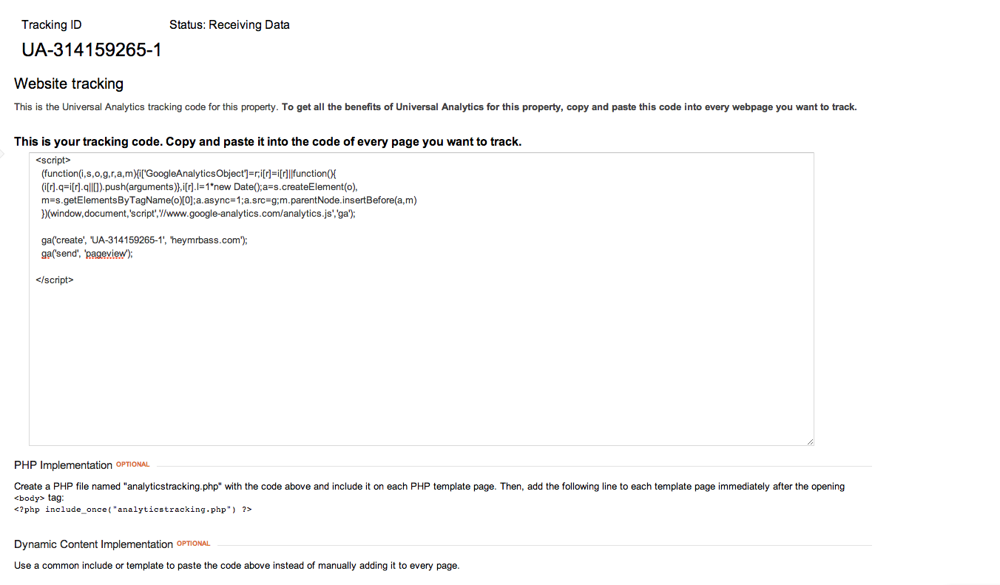
recording data has become super easy
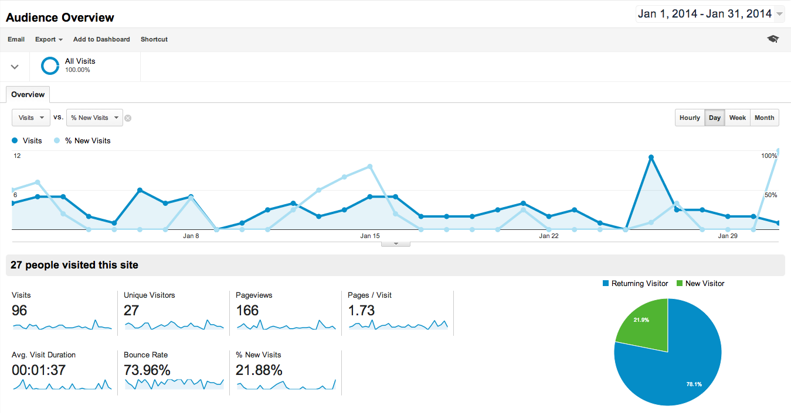
and interpreting data is still hard
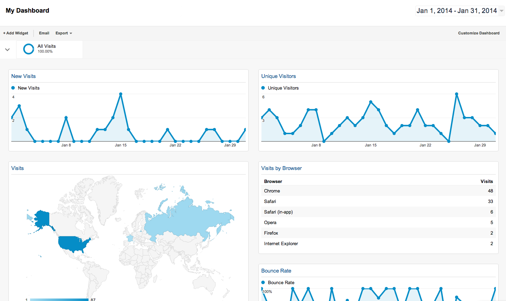since charts are pretty
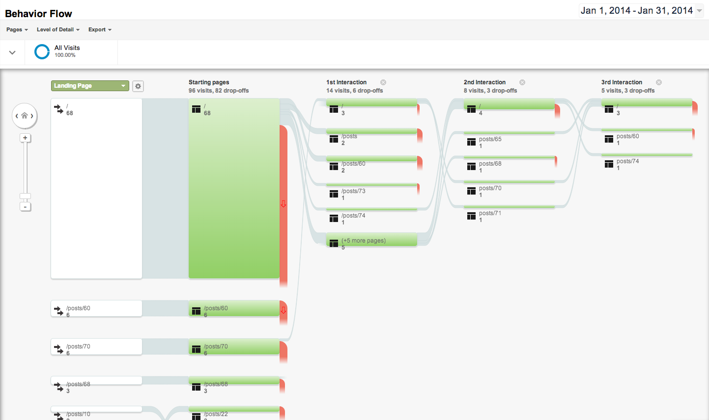especially if you don't know what they mean right away
The goal of this talk to is explore what Google Analytics is good at out-of-the-box
and how that relates to good data-driven design.
Also we'll talk about Segment.io and why it's really cool.
Part I:
Standard Reports
There are 5 basic reports Google Analytics uses out of the box:
- 1. Real-Time
- 2. Audience
- 3. Acquisition
- 4. Behavior
- 5. Conversions
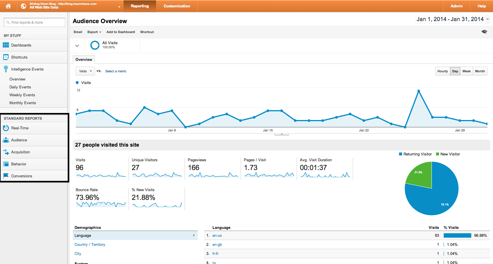
Real-Time Reports tell you... what's happening in real-time.
They're great for testing your analytics, as far as I'm concerned.
Real-Time Reports tell you... what's happening in real-time.
They're great for testing your analytics, as far as I'm concerned.
Also I guess they're cool.
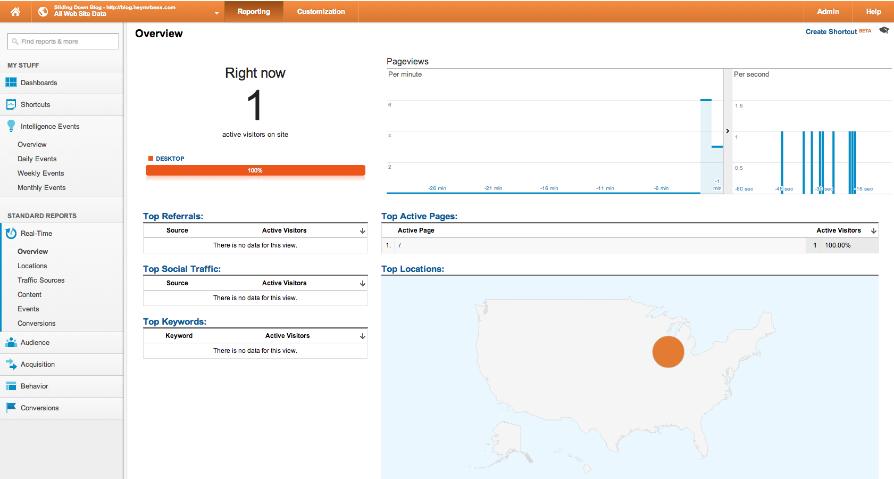
Audience Reports are for figuring out who uses your app.
You should use them to flesh out who the actors are for your use cases, build out personas, etc.
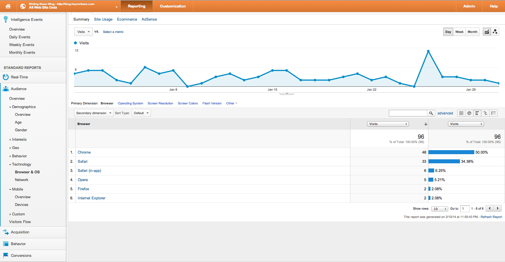
Acquisition Reports are about how you get users to visit and return to your site.
Right now we use this to track referrals, but it's also useful when you want to track results of an ad campaign or social media push.
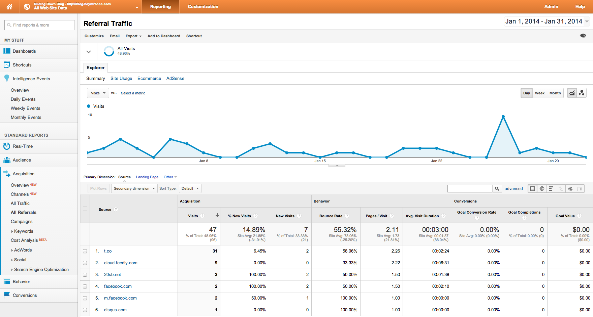
We use Behavior Reports to figure out how users use our site.
This is what everyone gets giddy over. You can track specific actions (drilling, navigating, toggling, etc).
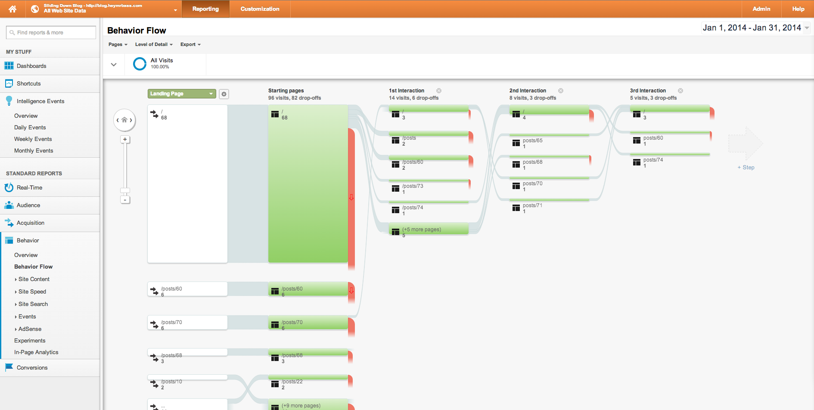
Last but not least, Conversion Reports.
A conversion is recorded when a user does an action you want. Then you can measure how effective you are at encouraging that action.
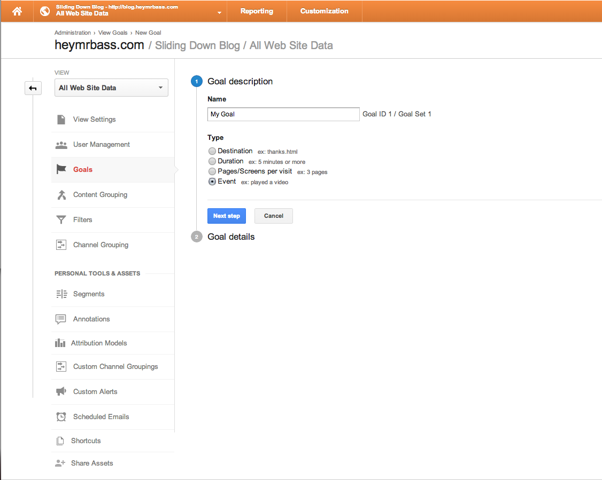
Additionally, we can filter by:
- + Timeframe
- + Customer Segment
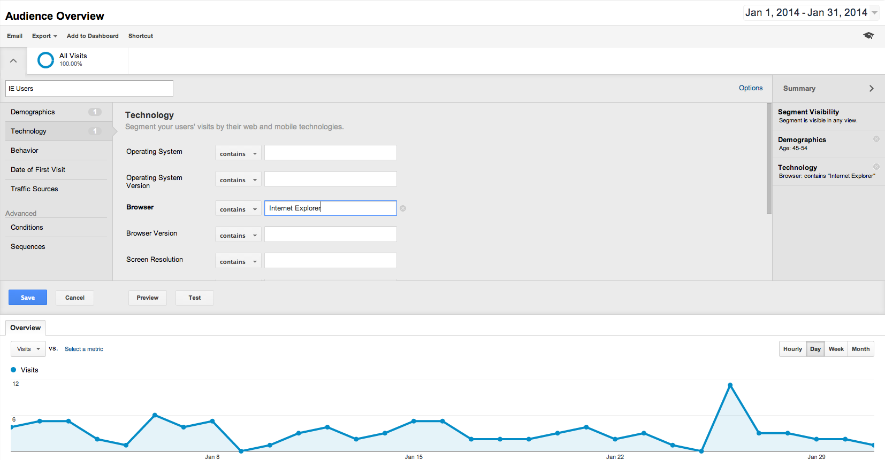
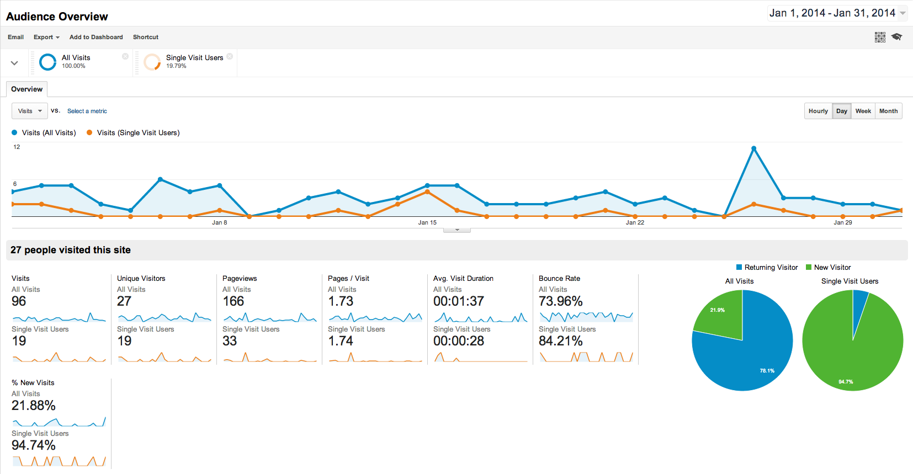
Part II:
Current State of Affairs
Goals So Far:
- + Get familiar with GA
- + Track more user actions
- + Figure out what questions we want answered
Down the Road:
- + A/B Testing
- + Painless integration w/ acquisition campaigns
- + Use data to back-up design decisions
Part III:
Segment.io
Segment.io is a common API for web analytics.
Segment.io Methods:
- + Identify
- + Track
- + Pageview
- + Group
- + Alias
Segment.io Libraries:
JavaScript
RubyNode.js
PythonPHP
Java.NET
iOSAndroid
All of which are open-source.
github.com/segmentioWe can use Segment.io to easily send analytics data to many different tools without rewriting code.
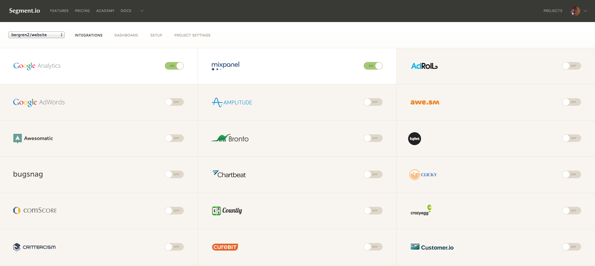
Questions?